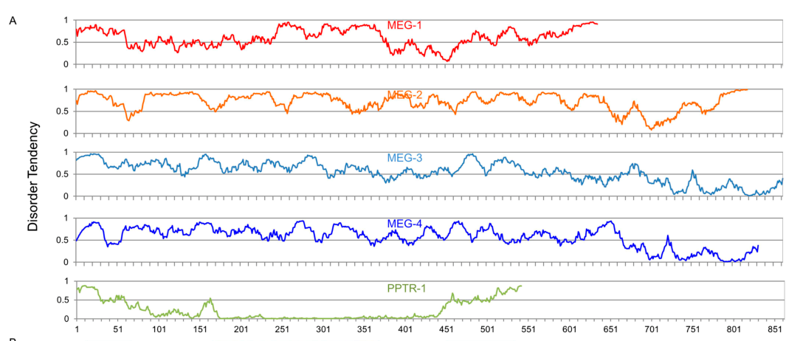

MEG-4 (maternal-effect germline defective 4) is an intrinsically disordered protein (IDP) that functions redundantly with its homolog MEG-3 in P granule assembly and segregation in C. elegans embryos. MEG-4 contains multiple disordered regions enriched in polar and low-complexity sequences, consistent with its role as a scaffold for biomolecular condensates. MEG-4 localizes to P granules and is regulated by MBK-2/DYRK phosphorylation, which controls P granule dynamics through phase separation. While meg-4 single mutants have mild phenotypes, meg-3 meg-4 double mutants fail to segregate P granules to the posterior of the zygote, and meg-1 meg-3 meg-4 triple mutants are 100% sterile. MEG-4 is essential for RNA recruitment to germ granules and proper small RNA homeostasis. Falcon deep research confirms MEG-4 (~71% identical to MEG-3, ~69% predicted disorder) is specifically required for cytoplasmic (embryonic) P granule assembly but not perinuclear germ granules, which reappear later (L1/L4), indicating a stage-specific requirement; in meg-3 meg-4 zygotes total P granules drop to ~11% of wild-type and nos-2 mRNA segregates symmetrically. The UniProt name "J domain-containing protein" is not supported by the primary literature, which describes MEG-4 as an intrinsically disordered MEG-family germ-plasm protein with no Hsp40/J-domain co-chaperone activity.
| GO Term | Evidence | Action | Reason |
|---|---|---|---|
|
GO:0005515
protein binding
|
IPI
PMID:12445390 Integrating interactome, phenome, and transcriptome mapping ... |
MARK AS OVER ANNOTATED |
Summary: High-throughput yeast two-hybrid screen identified interactions with atz-1 and klc-1. The PMID:12445390 publication describes an integrated interactome mapping approach for C. elegans germline proteins. While the interaction data is valid, the generic term "protein binding" does not provide functional insight for a scaffold protein whose core function is phase separation-mediated granule assembly.
Reason: The protein binding annotation from high-throughput Y2H screening is technically correct but uninformative. MEG-4 functions as a scaffold protein for P granule assembly through phase separation, and its biologically relevant interactions (e.g., with MEG-3) involve molecular condensate scaffold activity. Generic "protein binding" does not capture this functional context. The specific interactors (atz-1, klc-1) from this screen have not been validated for functional relevance to P granule biology.
Supporting Evidence:
PMID:12445390
we generated a two-hybrid interactome map of the Caenorhabditis elegans germline by using 600 transcripts enriched in this tissue
|
|
GO:0005515
protein binding
|
IPI
PMID:14704431 A map of the interactome network of the metazoan C. elegans. |
MARK AS OVER ANNOTATED |
Summary: Large-scale worm interactome mapping study identified MEG-4 interaction with ikb-1. This is a high-throughput Y2H screen with independent co-affinity purification validation.
Reason: While the Y2H interaction is experimentally supported, the generic "protein binding" term lacks functional specificity. MEG-4 is an IDP scaffold protein whose meaningful interactions involve condensate assembly. The interaction with ikb-1 (IKK binding protein) has not been shown to be relevant to MEG-4's core function in P granule biology. A more informative MF annotation would capture the molecular condensate scaffold activity.
Supporting Evidence:
PMID:14704431
more than 4000 interactions were identified from high-throughput, yeast two-hybrid (HT=Y2H) screens
|
|
GO:0005515
protein binding
|
IPI
PMID:19123269 Empirically controlled mapping of the Caenorhabditis elegans... |
MARK AS OVER ANNOTATED |
Summary: Empirically controlled C. elegans interactome study (WI-2007) with quality control framework showing interaction data similar in quality to low-throughput literature-curated data.
Reason: This annotation comes from a rigorous high-throughput Y2H study with empirical quality control. However, "protein binding" remains an uninformative term for MEG-4, whose function depends on its ability to scaffold molecular condensates through multivalent interactions mediated by its intrinsically disordered regions. The annotation does not capture the functional significance of MEG-4's protein interactions.
Supporting Evidence:
PMID:19123269
the resulting dataset (Worm Interactome 2007 or WI-2007) is similar in quality to low-throughput data curated from the literature
|
|
GO:0051640
organelle localization
|
IMP
PMID:25535836 Regulation of RNA granule dynamics by phosphorylation of ser... |
ACCEPT |
Summary: Wang et al. (2014) demonstrated that MEG proteins regulate P granule dynamics through phosphorylation-controlled phase separation. MEG-4 functions redundantly with MEG-3 in localizing P granules to the posterior of the embryo (PMID:25535836).
Reason: This annotation accurately captures MEG-4's role in P granule localization. The Wang et al. study provides direct mutant phenotype evidence that MEG proteins are required for proper organelle localization: "MEG (maternal-effect germline defective) proteins are germ plasm components that are required redundantly for fertility." P granule segregation to the posterior involves MEG-regulated condensation/dissolution dynamics controlled by MBK-2/DYRK kinase and PP2A phosphatase.
Supporting Evidence:
PMID:25535836
Phosphorylation of the MEGs promotes granule disassembly and dephosphorylation promotes granule assembly
file:worm/meg-4/meg-4-deep-research-falcon.md
MEG-4 is maternally provided and associates with embryonic P granules from the **1-cell through ~100-cell stage**, segregating with the P lineage.
|
|
GO:1903863
P granule assembly
|
IGI
PMID:25535836 Regulation of RNA granule dynamics by phosphorylation of ser... |
ACCEPT |
Summary: MEG-3 and MEG-4 are required together (genetic interaction) for proper P granule assembly. The Wang et al. study shows MEGs stabilize the condensed phase of P granules through regulated phase separation.
Reason: This is a core annotation for MEG-4 function. The IGI evidence code is appropriate as meg-3 meg-4 double mutants show synergistic defects in P granule assembly not seen in single mutants. MEG proteins localize to a dynamic domain surrounding P granules and are direct regulators of granule condensation dynamics through their intrinsically disordered, serine-rich regions that undergo phosphorylation-dependent phase transitions.
Supporting Evidence:
PMID:25535836
GFP-tagged MEG-3 localizes to a dynamic domain that surrounds and penetrates each granule
PMID:25535836
despite their liquid-like behavior, P granules are non-homogeneous structures whose assembly in embryos is regulated by phosphorylation
file:worm/meg-4/meg-4-deep-research-falcon.md
total P granules in meg-3 meg-4 zygotes are reduced to **~11% of wild-type**.
file:worm/meg-4/meg-4-deep-research-falcon.md
MEG-3 and MEG-4 are reported as **~71% identical** and functionally redundant in embryonic P granule assembly.
|
|
GO:0036093
germ cell proliferation
|
IGI
PMID:25535836 Regulation of RNA granule dynamics by phosphorylation of ser... |
KEEP AS NON CORE |
Summary: MEG proteins are required for germ cell viability and proliferation. The meg-1 meg-3 meg-4 triple mutant is 100% sterile, indicating MEGs contribute redundantly to germline function.
Reason: While MEG-4 is involved in germ cell proliferation, this represents a downstream consequence of its primary function in P granule assembly rather than a direct mechanistic role in cell proliferation. The sterility phenotype of triple mutants reflects failed germline development due to defective P granule function. This is a valid annotation but should be considered non-core compared to the direct molecular function in granule assembly.
Supporting Evidence:
PMID:25535836
The MEG (maternal-effect germline defective) proteins are germ plasm components that are required redundantly for fertility
file:worm/meg-4/meg-4-deep-research-falcon.md
**meg-1 meg-3 meg-4** animals are reported as **100% sterile**, with larvae exhibiting **<10 germ cells** and failure of germ cell proliferation.
|
|
GO:0005515
protein binding
|
IPI
PMID:25535836 Regulation of RNA granule dynamics by phosphorylation of ser... |
MODIFY |
Summary: Wang et al. identified specific protein interactions for MEG-4 in the context of P granule biology, including interactions with MEG-3 and phosphoregulators MBK-2 and PP2A(PPTR-1/2).
Reason: While the IPI evidence from PMID:25535836 is more functionally relevant than the high-throughput Y2H studies (demonstrating interactions with MEG-3 and kinase/phosphatase regulators), "protein binding" still fails to capture MEG-4's molecular function. MEG-4 functions as a scaffold for molecular condensate assembly through its intrinsically disordered regions. The term GO:0140693 "molecular condensate scaffold activity" would more accurately describe MEG-4's molecular function.
Proposed replacements:
molecular condensate scaffold activity
Supporting Evidence:
PMID:25535836
we present evidence that a group of intrinsically disordered, serine-rich proteins regulate the dynamics of P granules
PMID:25535836
We demonstrate that MEG-1 and MEG-3 are substrates of the kinase MBK-2/DYRK and the phosphatase PP2A(PPTR-½)
file:worm/meg-4/meg-4-deep-research-falcon.md
MEG-4 is described as a large, serine/threonine-rich protein with extensive predicted disorder and low-complexity regions, consistent with roles as a condensate scaffold/regulator.
|
|
GO:0043186
P granule
|
IDA
PMID:25535836 Regulation of RNA granule dynamics by phosphorylation of ser... |
ACCEPT |
Summary: Direct experimental observation showing MEG-4 localizes to P granules. Wang et al. used GFP-tagged MEG proteins and lattice light sheet microscopy to demonstrate localization to a dynamic domain surrounding and penetrating P granules.
Reason: This is a well-supported cellular component annotation. IDA evidence from imaging studies directly demonstrates MEG-4 localization to P granules. The study further characterizes MEG proteins as localizing to a dynamic peripheral domain of P granules that regulates condensate assembly/disassembly.
Supporting Evidence:
PMID:25535836
GFP-tagged MEG-3 localizes to a dynamic domain that surrounds and penetrates each granule
file:worm/meg-4/meg-4-deep-research-falcon.md
A study reports experimental tagging of MEG-4 using **C-terminal 3×FLAG** via CRISPR for localization, supporting that MEG-4 itself is present in embryonic germ plasm granules.
|
|
GO:0140693
molecular condensate scaffold activity
|
IDA
PMID:25535836 Regulation of RNA granule dynamics by phosphorylation of ser... |
NEW |
Summary: MEG-4 is an intrinsically disordered protein that functions as a scaffold for P granule condensate assembly. Wang et al. demonstrate that MEG proteins regulate granule dynamics through phase separation controlled by phosphorylation.
Reason: This annotation captures MEG-4's core molecular function as a scaffold that promotes the assembly of molecular condensates (P granules) through phase separation. MEG-4's long N-terminal intrinsically disordered region with serine-rich, polar residue composition (as documented in UniProt features) is characteristic of condensate scaffold proteins. The Wang et al. study demonstrates that MEG proteins directly regulate P granule condensation/dissolution dynamics through phosphorylation-dependent phase transitions.
Supporting Evidence:
PMID:25535836
we present evidence that a group of intrinsically disordered, serine-rich proteins regulate the dynamics of P granules in C. elegans embryos
PMID:25535836
Phosphorylation of the MEGs promotes granule disassembly and dephosphorylation promotes granule assembly
file:worm/meg-4/meg-4-deep-research-falcon.md
MEG-4 is predicted to be largely disordered (**~69% predicted disorder; 570/832 aa**)
|
|
GO:0060293
germ plasm
|
IDA
PMID:25535836 Regulation of RNA granule dynamics by phosphorylation of ser... |
NEW |
Summary: MEG-4 is a germ plasm component that localizes to P granules in the posterior cytoplasm of early embryos.
Reason: MEG-4 is explicitly described as a germ plasm component. The germ plasm is the specialized cytoplasm inherited by germline precursor cells, and P granules are the defining feature of C. elegans germ plasm. This cellular component annotation complements the P granule annotation by placing MEG-4 in the broader context of germline specification.
Supporting Evidence:
PMID:25535836
The MEG (maternal-effect germline defective) proteins are germ plasm components that are required redundantly for fertility
file:worm/meg-4/meg-4-deep-research-falcon.md
acts **redundantly with its close paralog MEG-3** to drive **cytoplasmic (embryonic) P granule assembly**
|
Q: Does MEG-4 bind RNA directly, or does it primarily function through protein-protein interactions?
Q: What is the precise molecular mechanism by which phosphorylation of MEG-4 promotes granule disassembly?
Q: Are there MEG-4-specific functions that are distinct from MEG-3, or are they fully redundant?
Experiment: In vitro phase separation assays with purified MEG-4 to characterize its intrinsic condensation properties
Hypothesis: MEG-4 can undergo liquid-liquid phase separation in vitro dependent on protein concentration and phosphorylation state
Type: biochemical reconstitution
Experiment: Phosphomimetic and phospho-null mutations in MEG-4 to map critical phosphorylation sites for granule dynamics
Hypothesis: Specific serine residues in MEG-4 are required for MBK-2-dependent regulation of P granule assembly
Type: mutagenesis
Experiment: CLIP-seq to identify direct RNA targets of MEG-4
Hypothesis: MEG-4 directly binds specific mRNA populations that are recruited to P granules
Type: RNA-protein interaction
Experiment: Cryo-ET of P granules in wild-type vs meg-4 mutants to characterize granule ultrastructure
Hypothesis: MEG-4 contributes to the non-homogeneous internal structure of P granules
Type: structural biology
The research report should be a detailed narrative explaining the function, biological processes, and localization of the gene product. Citations should be given for all claims.
You should prioritize authoritative reviews and primary scientific literature when conducting research. You can supplement
this with annotations you find in gene/protein databases, but these can be outdated or inaccurate.
We are specifically interested in the primary function of the gene - for enzymes, what reaction is catalyzed, and what is the substrate specificity? For transporters, what is the substrate? For structural proteins or adapters, what is the broader structural role? For signaling molecules, what is the role in the pathway.
We are interested in where in or outside the cell the gene product carries out its function.
We are also interested in the signaling or biochemical pathways in which the gene functions. We are less interested in broad pleiotropic effects, except where these elucidate the precise role.
Include evidence where possible. We are interested in both experimental evidence as well as inference from structure, evolution, or bioinformatic analysis. Precise studies should be prioritized over high-throughput, where available.
meg-4 encodes MEG-4, a maternally provided germ-plasm protein that acts redundantly with its close paralog MEG-3 to drive cytoplasmic (embryonic) P granule assembly and to promote preferential inheritance/enrichment of maternal mRNAs in the germline blastomeres during early embryogenesis. The strongest evidence for MEG-4 function is genetic and cell biological: meg-3 meg-4 double mutants lose most cytoplasmic P granules in embryos, show symmetric segregation of typical P-granule mRNAs (e.g., nos-2), and have partially penetrant sterility, while later perinuclear granules can recover, indicating a stage-specific requirement. Regulation of MEG-dependent granule dynamics is genetically downstream of MBK-2/DYRK and PP2A (PPTR-1/2). No evidence in the retrieved peer-reviewed literature supports the UniProt label “J domain-containing protein” for MEG-4; instead, the primary literature describes MEG-4 as a serine-rich, largely intrinsically disordered MEG-family protein closely related to MEG-3. (wang2014regulationofrna pages 5-7, wang2014regulationofrna pages 7-9, wang2014regulationofrna pages 11-13, wang2014regulationofrna pages 15-16)
In C. elegans embryos, P granules are cytoplasmic ribonucleoprotein (RNP) condensates that segregate with the germline (P lineage). Their formation and dissolution exhibit hallmarks of phase-separated assemblies, with different subdomains/components showing distinct dynamics. MEG proteins are central regulators of these dynamics in embryos. (wang2014regulationofrna pages 11-13, wang2014regulationofrna pages 15-16)
MEG proteins are maternally contributed factors required redundantly for normal germline development. In the best-cited primary study defining MEG-3/4 function, MEG-4 is described as a large, serine/threonine-rich protein with extensive predicted disorder and low-complexity regions, consistent with roles as a condensate scaffold/regulator. (wang2014regulationofrna pages 5-7, wang2014regulationofrna pages 15-16)
The literature retrieved here consistently uses meg-4 = MEG-4 = C36C9.1 in C. elegans, in the context of embryonic P granule assembly and germline determinant regulation. This matches the user-provided gene name/ORF and organism. (wang2014regulationofrna pages 7-9, wang2014regulationofrna pages 11-13)
Intrinsic disorder/low complexity: MEG-4 is predicted to be largely disordered (~69% predicted disorder; 570/832 aa), with low-complexity regions detectable under appropriate SEG parameters. (wang2014regulationofrna pages 5-7, wang2014regulationofrna media 088f36bf)
Paralogy to MEG-3: MEG-3 and MEG-4 are reported as ~71% identical and functionally redundant in embryonic P granule assembly. (wang2014regulationofrna pages 5-7, wang2014regulationofrna pages 7-9)
HMG-like motif (inference by alignment): A later mechanistic study focused on MEG-3 includes an alignment of an HMG-like motif in MEG-3 and MEG-4, suggesting a conserved ordered motif in both paralogs (in the context of MEG-3’s interaction with PGL proteins). This is supportive but indirect for MEG-4’s mechanism. (schmidt2021proteinbasedcondensationmechanisms pages 2-4)
Across the retrieved primary and review literature focused on MEG-3/MEG-4, MEG-4 is consistently discussed as an intrinsically disordered MEG-family germ plasm protein; none of these sources describe MEG-4 as an Hsp40/J-domain co-chaperone or report J-domain-dependent activities. Accordingly, within the evidence available here, a J-domain annotation is not supported and should be re-verified directly against UniProt/WormBase records (outside this environment). (wang2014regulationofrna pages 5-7, schmidt2021proteinbasedcondensationmechanisms pages 2-4, cipriani2021novellotusdomainproteins pages 1-2)
Embryonic localization to P granules/germ plasm: MEG-4 is maternally provided and associates with embryonic P granules from the 1-cell through ~100-cell stage, segregating with the P lineage. A study reports experimental tagging of MEG-4 using C-terminal 3×FLAG via CRISPR for localization, supporting that MEG-4 itself is present in embryonic germ plasm granules. (wang2014regulationofrna pages 11-13)
Granule substructure and dynamics (MEG vs PGL): MEG proteins show dynamics distinct from PGL components; MEG-positive/PGL-negative structures can be observed and MEG signals persist longer during disassembly than PGL signals, consistent with multi-phase or structured condensates. (wang2014regulationofrna pages 11-13)
Stage specificity: MEG-3/4 are required for P granule assembly in pre-gastrulation embryos, but perinuclear granules reappear later (L1/L4), indicating MEG-4 is not essential for all later germ-granule assembly modes. (wang2014regulationofrna pages 7-9)
Genetic evidence indicates meg-3 and meg-4 are the primary contributors to embryonic (cytoplasmic) P granule assembly. In meg-3 meg-4 zygotes, granule formation is severely impaired, with only transient small posterior granules and loss of robust enrichment in the germline founder cell by later stages. (wang2014regulationofrna pages 9-11, wang2014regulationofrna pages 7-9)
Quantitative phenotype: During the first mitosis, total P granules in meg-3 meg-4 zygotes are reduced to ~11% of wild-type. (wang2014regulationofrna pages 5-7, wang2014regulationofrna media 088f36bf)
In wild type, certain maternal RNAs (e.g., nos-2) segregate with P granules. In meg-3 meg-4 embryos, nos-2 RNA segregates symmetrically, consistent with loss of stable P granules, though somatic degradation remains intact. This supports the interpretation that MEG-3/4-dependent P granules contribute to preferential germline enrichment/inheritance of particular maternal mRNAs. (wang2014regulationofrna pages 7-9)
A P-granule transcriptome study further supports that MEG-3/4 are important for concentrating P-granule-associated transcripts in germline blastomeres, and that loss of meg-3/4 can lead to sterility particularly when combined with other germline determinant perturbations (genetic interactions). (lee2020recruitmentofmrnas pages 9-10)
A 2022 Development paper distinguishes roles of two germ plasm condensates: P granules (MEG-3/4-dependent) and germline P-bodies (MEG-1/2-dependent). In that framework, meg-3 meg-4 mutants lack maternal P granules but do not show the same fate transformation as meg-1 meg-2 mutants; meg-3/4 is described as antagonizing maximal translation activation of certain POS-1 targets in P4, and meg-3 meg-4 mutants remain largely fertile. (cassani2022specializedgermlinepbodies pages 6-8)
Genetic epistasis places meg-3/meg-4 downstream of the kinase MBK-2/DYRK and PP2A regulatory subunits PPTR-1/2 for controlling P granule assembly/disassembly. Notably, in mbk-2; meg-3 meg-4 embryos, granules still fail to assemble, indicating MEG-3/4 are required for assembly even when disassembly is inhibited. (wang2014regulationofrna pages 9-11)
The same work provides direct biochemical phosphorylation evidence for MEG-1 and MEG-3 (in vitro kinase assays; phosphoprotein behavior in vivo), and interprets MEG proteins as phosphoregulated scaffolds; however, direct biochemical phosphorylation assays for MEG-4 are not shown in the snippets reviewed here. (wang2014regulationofrna pages 5-7, wang2014regulationofrna pages 15-16)
meg-4 single mutants show only a slight reduction in P granule number in zygotes, while meg-3 single mutants show a stronger but still partial phenotype; the meg-3 meg-4 double mutant shows the strongest assembly defects, supporting redundancy with unequal contribution (MEG-3 stronger). (wang2014regulationofrna pages 7-9)
These data argue that MEG proteins contribute redundantly to germline development, and that fertility defects are not explained solely by visible P granule loss (since different meg combinations can be equally sterile with different granule phenotypes). (wang2014regulationofrna pages 15-16)
A 2024 Nature Communications study linking germline signals/piRNAs to somatic mitochondrial stress responses states that meg-1, meg-3, and meg-4 are required for cytoplasmic but not perinuclear P granule formation. In that work, RNAi knockdown of meg-1/meg-3/meg-4 did not abolish embryo-lysate-induced activation of UPRmt, whereas perturbing piRNA biogenesis/maturation did suppress the response. This places meg genes (including meg-4) in a broader, contemporary context where P granule integrity intersects with small-RNA biology and organismal stress signaling. (Zhou et al., 2024, https://doi.org/10.1038/s41467-024-53064-0) (zhou2024agermlinetosomasignal pages 1-2)
Direct 2023–2024 primary papers centered on MEG-4 molecular mechanism were not retrieved in this tool run; the most MEG-4-specific mechanistic genetics remain anchored in earlier landmark studies (2014–2022), while 2024 work uses meg genes largely as perturbations/markers of cytoplasmic P granule assembly. (zhou2024agermlinetosomasignal pages 1-2, wang2014regulationofrna pages 9-11)
MEG-4 is primarily used in C. elegans as a genetically tractable handle on embryonic germ plasm/P granule assembly and associated germline mRNA regulation. Common implementation patterns include:
Most direct evidence supports MEG-4 as a condensate scaffold/regulator rather than an enzyme or transporter. The strong, replicated phenotype is loss of cytoplasmic P granule assembly in embryos when combined with meg-3, plus consequent defects in germline enrichment of maternal mRNAs. (wang2014regulationofrna pages 7-9, lee2020recruitmentofmrnas pages 9-10)
MEG-4’s mechanistic biochemistry is less directly characterized than MEG-3’s. Many in vitro condensation and motif-function experiments are performed on MEG-3; MEG-4 is incorporated chiefly through redundancy genetics and alignment-based inference (e.g., shared HMG-like motif). (schmidt2021proteinbasedcondensationmechanisms pages 2-4)
MEG-dependent fertility likely involves functions beyond visible P granules. Synthetic sterility patterns and comparisons between mutant classes suggest MEG proteins contribute to essential germ plasm activities not strictly equivalent to “having detectable P granules,” consistent with a model where condensates coordinate multiple post-transcriptional regulatory processes. (wang2014regulationofrna pages 15-16, wang2014regulationofrna pages 9-11)
| Aspect | Evidence summary | Evidence type | Key citations |
|---|---|---|---|
| Identity/domain | The target is C. elegans meg-4 / C36C9.1 / MEG-4, a close paralog of MEG-3 with 71% identity. Evidence supports MEG-4 as a serine-rich, low-complexity, largely intrinsically disordered protein (~570/832 aa, 69% predicted disordered). Later work aligned a conserved HMG-like motif in MEG-4 with the motif in MEG-3/GCNA proteins. The literature snippets reviewed do not support a J-domain/Hsp40 assignment for MEG-4. | Inference from sequence prediction + comparative/domain analysis; supported by genetics-focused primary literature | (wang2014regulationofrna pages 5-7, schmidt2021proteinbasedcondensationmechanisms pages 2-4, cipriani2021novellotusdomainproteins pages 1-2) |
| Localization | MEG-4 is maternally provided and associates with embryonic P granules/germ plasm from the 1-cell to ~100-cell stage, segregating with the P lineage. A CRISPR 3×FLAG-tagged MEG-4 was used for localization. MEG-4 is not reported in adult gonad perinuclear granules, and MEG proteins can persist in granules longer than PGL proteins during disassembly; MEG-positive/PGL-negative granules were observed. | Cell biology + genetics | (wang2014regulationofrna pages 11-13) |
| Molecular/biophysical role | MEG-4 acts redundantly with MEG-3 as a primary factor for assembly of embryonic P granules and enrichment of P-granule-associated mRNAs in germline blastomeres. Loss of meg-3/4 prevents proper localization of PGL droplets and condensation of P-granule mRNAs. The direct biophysical work is stronger for MEG-3, but the evidence supports MEG-4 participating in the same condensate/phase-separation scaffold system. | Genetics + cell biology; partial inference from paralogy and shared phenotypes | (wang2014regulationofrna pages 9-11, wang2014regulationofrna pages 7-9, lee2020recruitmentofmrnas pages 9-10, schmidt2021proteinbasedcondensationmechanisms pages 2-4, schmidt2020coordinationofrna pages 1-4) |
| Pathways/regulators | Genetic epistasis places meg-4 with meg-3 downstream of MBK-2 and PPTR-1/2 in controlling the balance between P-granule assembly and disassembly. In mbk-2; meg-3 meg-4 embryos, granules still fail to assemble, showing MEG-3/4 are required even when disassembly is blocked. Direct phosphorylation was shown for MEG-1 and MEG-3, but direct biochemical phosphorylation evidence for MEG-4 was not shown in the cited snippets. | Genetics with limited biochemical inference | (wang2014regulationofrna pages 9-11, wang2014regulationofrna pages 11-13, wang2014regulationofrna pages 15-16) |
| Mutant/RNAi phenotypes | meg-4 single mutants show only a slight reduction in P-granule number, whereas meg-3 meg-4 double mutants have severe embryonic P-granule assembly defects and symmetric segregation of nos-2 RNA. Perinuclear P granules reappear later in PGCs/L1, indicating a stage-specific requirement. meg-3 meg-4 animals show partial sterility, while adding loss of other meg genes can cause severe germline proliferation defects and complete sterility. | Genetics + developmental cell biology | (wang2014regulationofrna pages 9-11, wang2014regulationofrna pages 7-9, cassani2022specializedgermlinepbodies pages 6-8, cipriani2021novellotusdomainproteins pages 1-2) |
| Key quantitative data | Reported values include: MEG-4 832 aa, 69% predicted disorder (570/832 aa); MEG-3/MEG-4 71% identical; in meg-3 meg-4 zygotes, total P granules during first mitosis are about 11% of wild type; adult sterility is about 27-30% for meg-3 meg-4, with ~70% fertile; meg-1 meg-3 meg-4 mutants are 100% sterile and larvae can have <10 germ cells. | Quantitative genetics/cell biology; sequence-based inference | (wang2014regulationofrna pages 5-7, wang2014regulationofrna pages 7-9, lee2020recruitmentofmrnas pages 9-10, schmidt2021proteinbasedcondensationmechanisms pages 2-4, wang2014regulationofrna pages 9-11) |
Table: This table summarizes the evidence-supported functional annotation of C. elegans meg-4/MEG-4, including identity, localization, biological role, regulatory context, and mutant phenotypes. It is restricted to claims directly supported by the cited evidence snippets and highlights where conclusions are based on inference rather than direct MEG-4 biochemistry.
References
(wang2014regulationofrna pages 5-7): Jennifer T Wang, Jarrett Smith, Bi-Chang Chen, Helen Schmidt, Dominique Rasoloson, Alexandre Paix, Bramwell G Lambrus, Deepika Calidas, Eric Betzig, and Geraldine Seydoux. Regulation of rna granule dynamics by phosphorylation of serine-rich, intrinsically disordered proteins in c. elegans. eLife, Dec 2014. URL: https://doi.org/10.7554/elife.04591, doi:10.7554/elife.04591. This article has 438 citations and is from a domain leading peer-reviewed journal.
(wang2014regulationofrna pages 7-9): Jennifer T Wang, Jarrett Smith, Bi-Chang Chen, Helen Schmidt, Dominique Rasoloson, Alexandre Paix, Bramwell G Lambrus, Deepika Calidas, Eric Betzig, and Geraldine Seydoux. Regulation of rna granule dynamics by phosphorylation of serine-rich, intrinsically disordered proteins in c. elegans. eLife, Dec 2014. URL: https://doi.org/10.7554/elife.04591, doi:10.7554/elife.04591. This article has 438 citations and is from a domain leading peer-reviewed journal.
(wang2014regulationofrna pages 11-13): Jennifer T Wang, Jarrett Smith, Bi-Chang Chen, Helen Schmidt, Dominique Rasoloson, Alexandre Paix, Bramwell G Lambrus, Deepika Calidas, Eric Betzig, and Geraldine Seydoux. Regulation of rna granule dynamics by phosphorylation of serine-rich, intrinsically disordered proteins in c. elegans. eLife, Dec 2014. URL: https://doi.org/10.7554/elife.04591, doi:10.7554/elife.04591. This article has 438 citations and is from a domain leading peer-reviewed journal.
(wang2014regulationofrna pages 15-16): Jennifer T Wang, Jarrett Smith, Bi-Chang Chen, Helen Schmidt, Dominique Rasoloson, Alexandre Paix, Bramwell G Lambrus, Deepika Calidas, Eric Betzig, and Geraldine Seydoux. Regulation of rna granule dynamics by phosphorylation of serine-rich, intrinsically disordered proteins in c. elegans. eLife, Dec 2014. URL: https://doi.org/10.7554/elife.04591, doi:10.7554/elife.04591. This article has 438 citations and is from a domain leading peer-reviewed journal.
(wang2014regulationofrna media 088f36bf): Jennifer T Wang, Jarrett Smith, Bi-Chang Chen, Helen Schmidt, Dominique Rasoloson, Alexandre Paix, Bramwell G Lambrus, Deepika Calidas, Eric Betzig, and Geraldine Seydoux. Regulation of rna granule dynamics by phosphorylation of serine-rich, intrinsically disordered proteins in c. elegans. eLife, Dec 2014. URL: https://doi.org/10.7554/elife.04591, doi:10.7554/elife.04591. This article has 438 citations and is from a domain leading peer-reviewed journal.
(schmidt2021proteinbasedcondensationmechanisms pages 2-4): Helen Schmidt, Andrea Putnam, Dominique Rasoloson, and Geraldine Seydoux. Protein-based condensation mechanisms drive the assembly of rna-rich p granules. eLife, Jun 2021. URL: https://doi.org/10.7554/elife.63698, doi:10.7554/elife.63698. This article has 31 citations and is from a domain leading peer-reviewed journal.
(cipriani2021novellotusdomainproteins pages 1-2): Patricia Giselle Cipriani, Olivia Bay, John Zinno, Michelle Gutwein, Hin Hark Gan, Vinay K Mayya, George Chung, Jia-Xuan Chen, Hala Fahs, Yu Guan, Thomas F Duchaine, Matthias Selbach, Fabio Piano, and Kristin C Gunsalus. Novel lotus-domain proteins are organizational hubs that recruit c. elegans vasa to germ granules. eLife, Jul 2021. URL: https://doi.org/10.7554/elife.60833, doi:10.7554/elife.60833. This article has 32 citations and is from a domain leading peer-reviewed journal.
(wang2014regulationofrna pages 9-11): Jennifer T Wang, Jarrett Smith, Bi-Chang Chen, Helen Schmidt, Dominique Rasoloson, Alexandre Paix, Bramwell G Lambrus, Deepika Calidas, Eric Betzig, and Geraldine Seydoux. Regulation of rna granule dynamics by phosphorylation of serine-rich, intrinsically disordered proteins in c. elegans. eLife, Dec 2014. URL: https://doi.org/10.7554/elife.04591, doi:10.7554/elife.04591. This article has 438 citations and is from a domain leading peer-reviewed journal.
(lee2020recruitmentofmrnas pages 9-10): Chih-Yung S Lee, Andrea Putnam, Tu Lu, ShuaiXin He, John Paul T Ouyang, and Geraldine Seydoux. Recruitment of mrnas to p granules by condensation with intrinsically-disordered proteins. eLife, Jan 2020. URL: https://doi.org/10.7554/elife.52896, doi:10.7554/elife.52896. This article has 149 citations and is from a domain leading peer-reviewed journal.
(cassani2022specializedgermlinepbodies pages 6-8): Madeline Cassani and Geraldine Seydoux. Specialized germline p-bodies are required to specify germ cell fate in caenorhabditis elegans embryos. Nov 2022. URL: https://doi.org/10.1242/dev.200920, doi:10.1242/dev.200920. This article has 35 citations and is from a domain leading peer-reviewed journal.
(zhou2024agermlinetosomasignal pages 1-2): Liankui Zhou, Liu Jiang, Lan Li, Chengchuan Ma, Peixue Xia, Wanqiu Ding, and Ying Liu. A germline-to-soma signal triggers an age-related decline of mitochondrial stress response. Nature Communications, Oct 2024. URL: https://doi.org/10.1038/s41467-024-53064-0, doi:10.1038/s41467-024-53064-0. This article has 15 citations and is from a highest quality peer-reviewed journal.
(schmidt2020coordinationofrna pages 1-4): Helen Schmidt, Andrea Putnam, Dominique Rasoloson, and Geraldine Seydoux. Coordination of rna and protein condensation by the p granule protein meg-3. bioRxiv, Oct 2020. URL: https://doi.org/10.1101/2020.10.15.340570, doi:10.1101/2020.10.15.340570. This article has 0 citations.

id: Q9TZK8
gene_symbol: meg-4
product_type: PROTEIN
status: COMPLETE
taxon:
id: NCBITaxon:6239
label: Caenorhabditis elegans
description: MEG-4 (maternal-effect germline defective 4) is an intrinsically disordered
protein (IDP) that functions redundantly with its homolog MEG-3 in P granule assembly
and segregation in C. elegans embryos. MEG-4 contains multiple disordered regions
enriched in polar and low-complexity sequences, consistent with its role as a scaffold
for biomolecular condensates. MEG-4 localizes to P granules and is regulated by
MBK-2/DYRK phosphorylation, which controls P granule dynamics through phase separation.
While meg-4 single mutants have mild phenotypes, meg-3 meg-4 double mutants fail
to segregate P granules to the posterior of the zygote, and meg-1 meg-3 meg-4 triple
mutants are 100% sterile. MEG-4 is essential for RNA recruitment to germ granules
and proper small RNA homeostasis. Falcon deep research confirms MEG-4 (~71% identical
to MEG-3, ~69% predicted disorder) is specifically required for cytoplasmic (embryonic)
P granule assembly but not perinuclear germ granules, which reappear later (L1/L4),
indicating a stage-specific requirement; in meg-3 meg-4 zygotes total P granules drop
to ~11% of wild-type and nos-2 mRNA segregates symmetrically. The UniProt name
"J domain-containing protein" is not supported by the primary literature, which
describes MEG-4 as an intrinsically disordered MEG-family germ-plasm protein with no
Hsp40/J-domain co-chaperone activity.
existing_annotations:
- term:
id: GO:0005515
label: protein binding
evidence_type: IPI
original_reference_id: PMID:12445390
review:
summary: High-throughput yeast two-hybrid screen identified interactions with
atz-1 and klc-1. The PMID:12445390 publication describes an integrated interactome
mapping approach for C. elegans germline proteins. While the interaction data
is valid, the generic term "protein binding" does not provide functional insight
for a scaffold protein whose core function is phase separation-mediated granule
assembly.
action: MARK_AS_OVER_ANNOTATED
reason: The protein binding annotation from high-throughput Y2H screening is technically
correct but uninformative. MEG-4 functions as a scaffold protein for P granule
assembly through phase separation, and its biologically relevant interactions
(e.g., with MEG-3) involve molecular condensate scaffold activity. Generic "protein
binding" does not capture this functional context. The specific interactors
(atz-1, klc-1) from this screen have not been validated for functional relevance
to P granule biology.
supported_by:
- reference_id: PMID:12445390
supporting_text: we generated a two-hybrid interactome map of the Caenorhabditis
elegans germline by using 600 transcripts enriched in this tissue
- term:
id: GO:0005515
label: protein binding
evidence_type: IPI
original_reference_id: PMID:14704431
review:
summary: Large-scale worm interactome mapping study identified MEG-4 interaction
with ikb-1. This is a high-throughput Y2H screen with independent co-affinity
purification validation.
action: MARK_AS_OVER_ANNOTATED
reason: While the Y2H interaction is experimentally supported, the generic "protein
binding" term lacks functional specificity. MEG-4 is an IDP scaffold protein
whose meaningful interactions involve condensate assembly. The interaction with
ikb-1 (IKK binding protein) has not been shown to be relevant to MEG-4's core
function in P granule biology. A more informative MF annotation would capture
the molecular condensate scaffold activity.
supported_by:
- reference_id: PMID:14704431
supporting_text: more than 4000 interactions were identified from high-throughput,
yeast two-hybrid (HT=Y2H) screens
- term:
id: GO:0005515
label: protein binding
evidence_type: IPI
original_reference_id: PMID:19123269
review:
summary: Empirically controlled C. elegans interactome study (WI-2007) with quality
control framework showing interaction data similar in quality to low-throughput
literature-curated data.
action: MARK_AS_OVER_ANNOTATED
reason: This annotation comes from a rigorous high-throughput Y2H study with empirical
quality control. However, "protein binding" remains an uninformative term for
MEG-4, whose function depends on its ability to scaffold molecular condensates
through multivalent interactions mediated by its intrinsically disordered regions.
The annotation does not capture the functional significance of MEG-4's protein
interactions.
supported_by:
- reference_id: PMID:19123269
supporting_text: the resulting dataset (Worm Interactome 2007 or WI-2007) is
similar in quality to low-throughput data curated from the literature
- term:
id: GO:0051640
label: organelle localization
evidence_type: IMP
original_reference_id: PMID:25535836
review:
summary: Wang et al. (2014) demonstrated that MEG proteins regulate P granule
dynamics through phosphorylation-controlled phase separation. MEG-4 functions
redundantly with MEG-3 in localizing P granules to the posterior of the embryo
(PMID:25535836).
action: ACCEPT
reason: 'This annotation accurately captures MEG-4''s role in P granule localization.
The Wang et al. study provides direct mutant phenotype evidence that MEG proteins
are required for proper organelle localization: "MEG (maternal-effect germline
defective) proteins are germ plasm components that are required redundantly
for fertility." P granule segregation to the posterior involves MEG-regulated
condensation/dissolution dynamics controlled by MBK-2/DYRK kinase and PP2A phosphatase.'
additional_reference_ids:
- file:worm/meg-4/meg-4-deep-research-falcon.md
supported_by:
- reference_id: PMID:25535836
supporting_text: Phosphorylation of the MEGs promotes granule disassembly and
dephosphorylation promotes granule assembly
- reference_id: file:worm/meg-4/meg-4-deep-research-falcon.md
supporting_text: |-
MEG-4 is maternally provided and associates with embryonic P granules from the **1-cell through ~100-cell stage**, segregating with the P lineage.
- term:
id: GO:1903863
label: P granule assembly
evidence_type: IGI
original_reference_id: PMID:25535836
review:
summary: MEG-3 and MEG-4 are required together (genetic interaction) for proper
P granule assembly. The Wang et al. study shows MEGs stabilize the condensed
phase of P granules through regulated phase separation.
action: ACCEPT
reason: This is a core annotation for MEG-4 function. The IGI evidence code is
appropriate as meg-3 meg-4 double mutants show synergistic defects in P granule
assembly not seen in single mutants. MEG proteins localize to a dynamic domain
surrounding P granules and are direct regulators of granule condensation dynamics
through their intrinsically disordered, serine-rich regions that undergo phosphorylation-dependent
phase transitions.
additional_reference_ids:
- file:worm/meg-4/meg-4-deep-research-falcon.md
supported_by:
- reference_id: PMID:25535836
supporting_text: GFP-tagged MEG-3 localizes to a dynamic domain that surrounds
and penetrates each granule
- reference_id: PMID:25535836
supporting_text: despite their liquid-like behavior, P granules are non-homogeneous
structures whose assembly in embryos is regulated by phosphorylation
- reference_id: file:worm/meg-4/meg-4-deep-research-falcon.md
supporting_text: |-
total P granules in meg-3 meg-4 zygotes are reduced to **~11% of wild-type**.
- reference_id: file:worm/meg-4/meg-4-deep-research-falcon.md
supporting_text: |-
MEG-3 and MEG-4 are reported as **~71% identical** and functionally redundant in embryonic P granule assembly.
- term:
id: GO:0036093
label: germ cell proliferation
evidence_type: IGI
original_reference_id: PMID:25535836
review:
summary: MEG proteins are required for germ cell viability and proliferation.
The meg-1 meg-3 meg-4 triple mutant is 100% sterile, indicating MEGs contribute
redundantly to germline function.
action: KEEP_AS_NON_CORE
reason: While MEG-4 is involved in germ cell proliferation, this represents a
downstream consequence of its primary function in P granule assembly rather
than a direct mechanistic role in cell proliferation. The sterility phenotype
of triple mutants reflects failed germline development due to defective P granule
function. This is a valid annotation but should be considered non-core compared
to the direct molecular function in granule assembly.
additional_reference_ids:
- file:worm/meg-4/meg-4-deep-research-falcon.md
supported_by:
- reference_id: PMID:25535836
supporting_text: The MEG (maternal-effect germline defective) proteins are germ
plasm components that are required redundantly for fertility
- reference_id: file:worm/meg-4/meg-4-deep-research-falcon.md
supporting_text: |-
**meg-1 meg-3 meg-4** animals are reported as **100% sterile**, with larvae exhibiting **<10 germ cells** and failure of germ cell proliferation.
- term:
id: GO:0005515
label: protein binding
evidence_type: IPI
original_reference_id: PMID:25535836
review:
summary: Wang et al. identified specific protein interactions for MEG-4 in the
context of P granule biology, including interactions with MEG-3 and phosphoregulators
MBK-2 and PP2A(PPTR-1/2).
action: MODIFY
reason: While the IPI evidence from PMID:25535836 is more functionally relevant
than the high-throughput Y2H studies (demonstrating interactions with MEG-3
and kinase/phosphatase regulators), "protein binding" still fails to capture
MEG-4's molecular function. MEG-4 functions as a scaffold for molecular condensate
assembly through its intrinsically disordered regions. The term GO:0140693 "molecular
condensate scaffold activity" would more accurately describe MEG-4's molecular
function.
proposed_replacement_terms:
- id: GO:0140693
label: molecular condensate scaffold activity
additional_reference_ids:
- file:worm/meg-4/meg-4-deep-research-falcon.md
supported_by:
- reference_id: PMID:25535836
supporting_text: we present evidence that a group of intrinsically disordered,
serine-rich proteins regulate the dynamics of P granules
- reference_id: PMID:25535836
supporting_text: "We demonstrate that MEG-1 and MEG-3 are substrates of the\
\ kinase MBK-2/DYRK and the phosphatase PP2A(PPTR-\xBD)"
- reference_id: file:worm/meg-4/meg-4-deep-research-falcon.md
supporting_text: |-
MEG-4 is described as a large, serine/threonine-rich protein with extensive predicted disorder and low-complexity regions, consistent with roles as a condensate scaffold/regulator.
- term:
id: GO:0043186
label: P granule
evidence_type: IDA
original_reference_id: PMID:25535836
review:
summary: Direct experimental observation showing MEG-4 localizes to P granules.
Wang et al. used GFP-tagged MEG proteins and lattice light sheet microscopy
to demonstrate localization to a dynamic domain surrounding and penetrating
P granules.
action: ACCEPT
reason: This is a well-supported cellular component annotation. IDA evidence from
imaging studies directly demonstrates MEG-4 localization to P granules. The
study further characterizes MEG proteins as localizing to a dynamic peripheral
domain of P granules that regulates condensate assembly/disassembly.
additional_reference_ids:
- file:worm/meg-4/meg-4-deep-research-falcon.md
supported_by:
- reference_id: PMID:25535836
supporting_text: GFP-tagged MEG-3 localizes to a dynamic domain that surrounds
and penetrates each granule
- reference_id: file:worm/meg-4/meg-4-deep-research-falcon.md
supporting_text: |-
A study reports experimental tagging of MEG-4 using **C-terminal 3×FLAG** via CRISPR for localization, supporting that MEG-4 itself is present in embryonic germ plasm granules.
- term:
id: GO:0140693
label: molecular condensate scaffold activity
evidence_type: IDA
original_reference_id: PMID:25535836
review:
summary: MEG-4 is an intrinsically disordered protein that functions as a scaffold
for P granule condensate assembly. Wang et al. demonstrate that MEG proteins
regulate granule dynamics through phase separation controlled by phosphorylation.
action: NEW
reason: This annotation captures MEG-4's core molecular function as a scaffold
that promotes the assembly of molecular condensates (P granules) through phase
separation. MEG-4's long N-terminal intrinsically disordered region with serine-rich,
polar residue composition (as documented in UniProt features) is characteristic
of condensate scaffold proteins. The Wang et al. study demonstrates that MEG
proteins directly regulate P granule condensation/dissolution dynamics through
phosphorylation-dependent phase transitions.
additional_reference_ids:
- file:worm/meg-4/meg-4-deep-research-falcon.md
supported_by:
- reference_id: PMID:25535836
supporting_text: we present evidence that a group of intrinsically disordered,
serine-rich proteins regulate the dynamics of P granules in C. elegans embryos
- reference_id: PMID:25535836
supporting_text: Phosphorylation of the MEGs promotes granule disassembly and
dephosphorylation promotes granule assembly
- reference_id: file:worm/meg-4/meg-4-deep-research-falcon.md
supporting_text: |-
MEG-4 is predicted to be largely disordered (**~69% predicted disorder; 570/832 aa**)
- term:
id: GO:0060293
label: germ plasm
evidence_type: IDA
original_reference_id: PMID:25535836
review:
summary: MEG-4 is a germ plasm component that localizes to P granules in the posterior
cytoplasm of early embryos.
action: NEW
reason: MEG-4 is explicitly described as a germ plasm component. The germ plasm
is the specialized cytoplasm inherited by germline precursor cells, and P granules
are the defining feature of C. elegans germ plasm. This cellular component annotation
complements the P granule annotation by placing MEG-4 in the broader context
of germline specification.
additional_reference_ids:
- file:worm/meg-4/meg-4-deep-research-falcon.md
supported_by:
- reference_id: PMID:25535836
supporting_text: The MEG (maternal-effect germline defective) proteins are germ
plasm components that are required redundantly for fertility
- reference_id: file:worm/meg-4/meg-4-deep-research-falcon.md
supporting_text: |-
acts **redundantly with its close paralog MEG-3** to drive **cytoplasmic (embryonic) P granule assembly**
references:
- id: PMID:12445390
title: Integrating interactome, phenome, and transcriptome mapping data for the
C. elegans germline.
findings:
- statement: MEG-4 identified in germline-enriched Y2H interactome screen
supporting_text: we generated a two-hybrid interactome map of the Caenorhabditis
elegans germline by using 600 transcripts enriched in this tissue
- statement: Interactions detected with atz-1 and klc-1
supporting_text: we find that essential proteins have a tendency to interact with
each other
- id: PMID:14704431
title: A map of the interactome network of the metazoan C. elegans.
findings:
- statement: Large-scale Y2H interactome mapping
supporting_text: more than 4000 interactions were identified from high-throughput,
yeast two-hybrid (HT=Y2H) screens
- statement: MEG-4 interaction with ikb-1 identified
supporting_text: Independent coaffinity purification assays experimentally validated
the overall quality of this Y2H data set
- id: PMID:19123269
title: Empirically controlled mapping of the Caenorhabditis elegans protein-protein
interactome network.
findings:
- statement: High-confidence interactome data (WI-2007)
supporting_text: the resulting dataset (Worm Interactome 2007 or WI-2007) is similar
in quality to low-throughput data curated from the literature
- statement: Quality control framework validates Y2H data quality
supporting_text: Through a new quality control empirical framework
- id: PMID:25535836
title: Regulation of RNA granule dynamics by phosphorylation of serine-rich, intrinsically
disordered proteins in C. elegans.
findings:
- statement: MEG proteins (MEG-1, MEG-3, MEG-4) are IDPs that regulate P granule
dynamics
supporting_text: we present evidence that a group of intrinsically disordered,
serine-rich proteins regulate the dynamics of P granules in C. elegans embryos
- statement: MEGs are substrates of MBK-2/DYRK kinase and PP2A phosphatase
supporting_text: "We demonstrate that MEG-1 and MEG-3 are substrates of the kinase\
\ MBK-2/DYRK and the phosphatase PP2A(PPTR-\xBD)"
- statement: Phosphorylation promotes granule disassembly, dephosphorylation promotes
assembly
supporting_text: Phosphorylation of the MEGs promotes granule disassembly and
dephosphorylation promotes granule assembly
- statement: GFP-MEG-3 localizes to dynamic domain surrounding P granules
supporting_text: GFP-tagged MEG-3 localizes to a dynamic domain that surrounds
and penetrates each granule
- statement: MEG proteins function redundantly for fertility
supporting_text: The MEG (maternal-effect germline defective) proteins are germ
plasm components that are required redundantly for fertility
- id: file:worm/meg-4/meg-4-deep-research-falcon.md
title: Falcon deep research report on C. elegans meg-4 (Q9TZK8 / C36C9.1)
findings:
- statement: |-
MEG-4 acts redundantly with its close paralog MEG-3 to drive cytoplasmic
(embryonic) P granule assembly and to promote preferential germline
inheritance/enrichment of maternal mRNAs during early embryogenesis.
supporting_text: |-
acts **redundantly with its close paralog MEG-3** to drive **cytoplasmic (embryonic) P granule assembly**
reference_section_type: OTHER
- statement: |-
MEG-4 is a large (832 aa), serine/threonine-rich, largely intrinsically
disordered MEG-family protein (~69% predicted disorder, 570/832 aa) with
low-complexity regions, consistent with a condensate scaffold/regulator role.
supporting_text: |-
MEG-4 is predicted to be largely disordered (**~69% predicted disorder; 570/832 aa**)
reference_section_type: OTHER
- statement: |-
MEG-3 and MEG-4 are approximately 71% identical and functionally redundant
in embryonic P granule assembly.
supporting_text: |-
MEG-3 and MEG-4 are reported as **~71% identical** and functionally redundant in embryonic P granule assembly.
reference_section_type: OTHER
- statement: |-
MEG-4 is maternally provided and associates with embryonic P granules /
germ plasm from the 1-cell through ~100-cell stage, segregating with the
P lineage; a CRISPR C-terminal 3xFLAG tag was used to localize MEG-4.
supporting_text: |-
MEG-4 is maternally provided and associates with embryonic P granules from the **1-cell through ~100-cell stage**, segregating with the P lineage.
reference_section_type: OTHER
- statement: |-
In meg-3 meg-4 double mutant zygotes, granule formation is severely
impaired; total P granules during first mitosis are reduced to ~11% of
wild-type, and nos-2 mRNA segregates symmetrically rather than with the
germline blastomere.
supporting_text: |-
total P granules in meg-3 meg-4 zygotes are reduced to **~11% of wild-type**.
reference_section_type: OTHER
- statement: |-
Genetic epistasis places meg-3/meg-4 downstream of the kinase MBK-2/DYRK
and PP2A regulatory subunits PPTR-1/2 in controlling the balance of P
granule assembly and disassembly.
supporting_text: |-
Genetic epistasis places *meg-3/meg-4* downstream of the kinase **MBK-2/DYRK** and PP2A regulatory subunits **PPTR-1/2** for controlling P granule assembly/disassembly.
reference_section_type: OTHER
- statement: |-
meg-3/4-dependent P granules contribute to preferential germline
enrichment/inheritance of particular maternal mRNAs (e.g. nos-2).
supporting_text: |-
MEG-3/4-dependent P granules contribute to **preferential germline enrichment/inheritance** of particular maternal mRNAs.
reference_section_type: OTHER
- statement: |-
meg-4 single mutants show only a slight reduction in P granule number;
the meg-3 meg-4 double mutant has the strongest embryonic assembly defect,
indicating redundancy with MEG-3 contributing the larger share.
supporting_text: |-
*meg-4* single mutants show **only a slight reduction** in P granule number in zygotes
reference_section_type: OTHER
- statement: |-
MEG-1/MEG-3/MEG-4 are required for cytoplasmic but not perinuclear P
granule formation; perinuclear granules reappear later (L1/L4), indicating
a stage-specific requirement.
supporting_text: |-
**meg-1, meg-3, and meg-4 are required for cytoplasmic but not perinuclear P granule formation**
reference_section_type: OTHER
- statement: |-
meg-1 meg-3 meg-4 triple mutants are 100% sterile with larvae showing
<10 germ cells and failure of germ cell proliferation, indicating MEG
proteins contribute redundantly to germline development.
supporting_text: |-
**meg-1 meg-3 meg-4** animals are reported as **100% sterile**, with larvae exhibiting **<10 germ cells** and failure of germ cell proliferation.
reference_section_type: OTHER
- statement: |-
The peer-reviewed literature does not support the UniProt "J domain-containing
protein" name for MEG-4; no source describes MEG-4 as an Hsp40/J-domain
co-chaperone or reports J-domain-dependent activities.
supporting_text: |-
none of these sources describe MEG-4 as an Hsp40/J-domain co-chaperone or report J-domain-dependent activities
reference_section_type: OTHER
core_functions:
- description: MEG-4 functions as an intrinsically disordered scaffold protein that
promotes P granule assembly through phase separation. Its long disordered N-terminal
region with serine-rich, polar residue composition enables multivalent interactions
required for condensate formation. This is MEG-4's primary molecular function.
molecular_function:
id: GO:0140693
label: molecular condensate scaffold activity
directly_involved_in:
- id: GO:1903863
label: P granule assembly
locations:
- id: GO:0043186
label: P granule
- id: GO:0060293
label: germ plasm
supported_by:
- reference_id: PMID:25535836
supporting_text: we present evidence that a group of intrinsically disordered,
serine-rich proteins regulate the dynamics of P granules in C. elegans embryos
- reference_id: PMID:25535836
supporting_text: Phosphorylation of the MEGs promotes granule disassembly and
dephosphorylation promotes granule assembly
- reference_id: file:worm/meg-4/meg-4-deep-research-falcon.md
supporting_text: |-
acts **redundantly with its close paralog MEG-3** to drive **cytoplasmic (embryonic) P granule assembly**
- reference_id: file:worm/meg-4/meg-4-deep-research-falcon.md
supporting_text: |-
MEG-4 is described as a large, serine/threonine-rich protein with extensive predicted disorder and low-complexity regions, consistent with roles as a condensate scaffold/regulator.
proposed_new_terms: []
suggested_questions:
- question: Does MEG-4 bind RNA directly, or does it primarily function through protein-protein
interactions?
- question: What is the precise molecular mechanism by which phosphorylation of MEG-4
promotes granule disassembly?
- question: Are there MEG-4-specific functions that are distinct from MEG-3, or are
they fully redundant?
suggested_experiments:
- description: In vitro phase separation assays with purified MEG-4 to characterize
its intrinsic condensation properties
hypothesis: MEG-4 can undergo liquid-liquid phase separation in vitro dependent
on protein concentration and phosphorylation state
experiment_type: biochemical reconstitution
- description: Phosphomimetic and phospho-null mutations in MEG-4 to map critical
phosphorylation sites for granule dynamics
hypothesis: Specific serine residues in MEG-4 are required for MBK-2-dependent regulation
of P granule assembly
experiment_type: mutagenesis
- description: CLIP-seq to identify direct RNA targets of MEG-4
hypothesis: MEG-4 directly binds specific mRNA populations that are recruited to
P granules
experiment_type: RNA-protein interaction
- description: Cryo-ET of P granules in wild-type vs meg-4 mutants to characterize
granule ultrastructure
hypothesis: MEG-4 contributes to the non-homogeneous internal structure of P granules
experiment_type: structural biology
tags:
- caeel-p-granules
{kind=link}